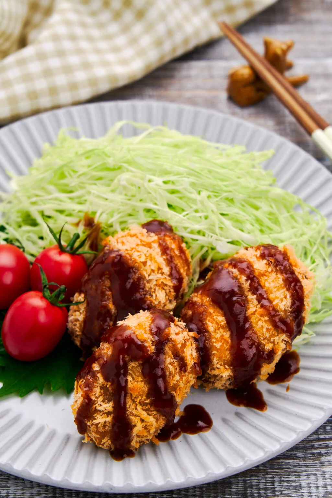

Korokke (Japanese Potato Croquettes)

Description
Japanese potato croquette (コロッケ - Korokke) is a meat and potatoes Japanese comfort food that I've leveled up using a few kitchen techniques. With a crispy panko shell holding together a creamy mashed potato filling with sweet caramelized onions and bits of savory hand-minced pork, this Korokke recipe does take a bit of work, but I promise you the results are worth the effort.
Cheap yet satisfying, Korokke is both literally and figuratively a meat and potatoes dish that's long been a staple of Japanese home cooking. Growing up, my mom used to make her version of these potato croquettes with ground beef, onions, and canned corn, and the smell of the meat and onions always drew me out of my room to give the filling a taste.
Ingredients
- For Korokke filling
- 320 grams pork shoulder
- 500 grams potatoes
- 1 tbsp oyster sauce
- 1 tbsp vegetable oil
- 120 grams onion
- 1 tbsp potato starch
- 60 ml low sodium chicken stock
- 1/4 tsp salt
- 1/4 tsp ground white pepper
- 1/8 tsp nutmeg
- For breading Korokke
- 1/4 cup all-purpose flour
- 1 large egg
- 100 grams fresh Panko
- Vegetable oil for frying
Steps
- Thoroughly wash and scrub the potatoes to remove any dirt or debris. Add the potatoes to a pot and cover with 2-3 inches of water. Cover and bring the water to a boil. Once the water comes to a full boil, remove the lid and lower the heat to maintain a simmer. Cook the potatoes until a skewer can easily be passed through them (about 30-40 minutes).
- Slice the pork into thin slices with a knife and then cut the slices into strips.
- Turn the strips 90 degrees and mince the pork into pieces that are about ⅛-inch in size. Mix the pork with the oyster sauce to marinate.
- Add the potato starch, chicken stock, salt, and white pepper into a bowl, and then grate in some nutmeg with a Microplane (you're aiming for 1/16-⅛ teaspoon). Stir until the starch is evenly dispersed.
- Once the potatoes are cooked, remove them from the water and let them cool enough to handle. You can peel them and mash them using a potato masher or fork, but I prefer a potato ricer, which eliminates the need to peel them.
- Add the oil and onions to a frying pan over medium heat and saute until the onions start to brown (~4-5 minutes).
- Add the minced pork and then stir-fry until the pork begins to brown and a good amount of fat has rendered out (~4-5 minutes).
- Give the stock and starch mixture a stir to redistribute and pour it into the pork and onions. Stir aggressively until it forms a paste.
- Add the mashed potatoes and fold the mixture together until uniform in color and texture.
- Dump the potato mixture into a tray and flatten it out. Cover the mixture directly with parchment paper to keep it from drying out, and let it cool to room temperature. Cover the tray with a lid or plastic wrap and refrigerate the mixture for at least 2 hours, preferably overnight.
- When you're ready to fry the Korokke, heat 2-inches of oil in a pot with high sides to 320°F (160°C). Prepare a cooling rack lined with 3-4 sheets of paper towels.
- Use a pastry knife to divide the potato filling into 8-12 blocks.
- Scoop each block out and use your hands to shape them into patties that are no thicker than an inch. Be sure to get rid of any air pockets or cracks; otherwise, the Korokke will explode when you fry them.
- Roll the potato patties in the flour to create a thin, even coating, and then pat them between your hands to remove any excess flour.
- Add the panko into a tray or bowl, and then beat the egg in a bowl until it is uniform in color.
- Use one hand to dip and roll each potato patty in the egg to give it a uniform coating and then transfer it to the panko.
- Use your other hand to scoop the panko on top of the potato croquette and gently pat and squeeze the panko into the patty to get it to adhere. Repeat with the rest of the patties.
- To fry the Korokke, gently lower them into the preheated oil and fry them, flipping them over every 2 minutes until they are golden brown and crisp (this should take about 6 minutes).
- Drain the Korokke on the paper towel lined rack and serve while hot with a bed of shredded cabbage and sauce (tonkatsu, okonomiyaki, chunou, or Worcestershire sauce all work).